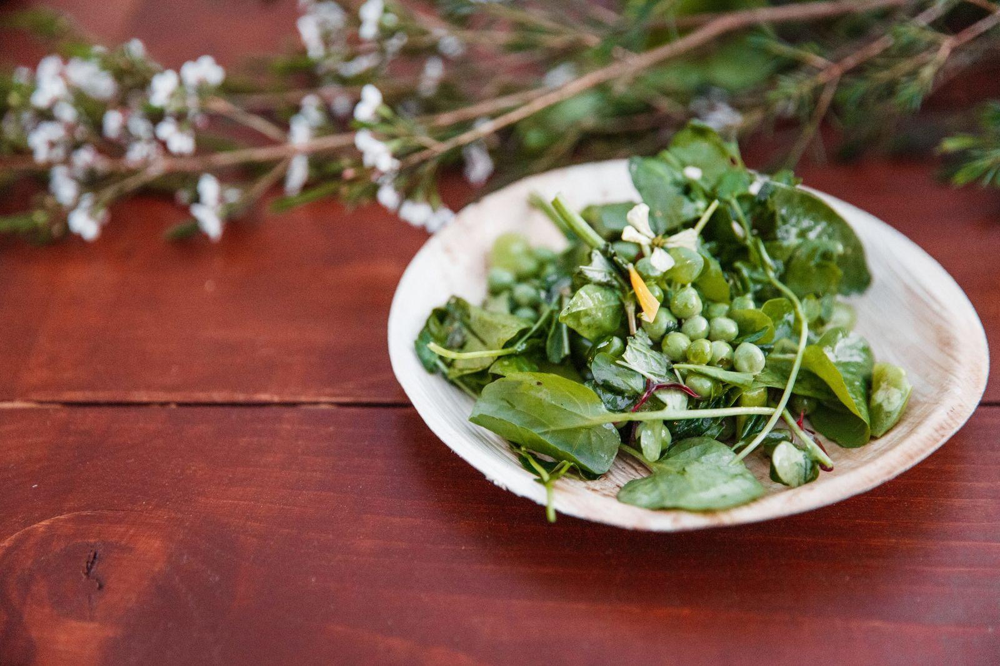
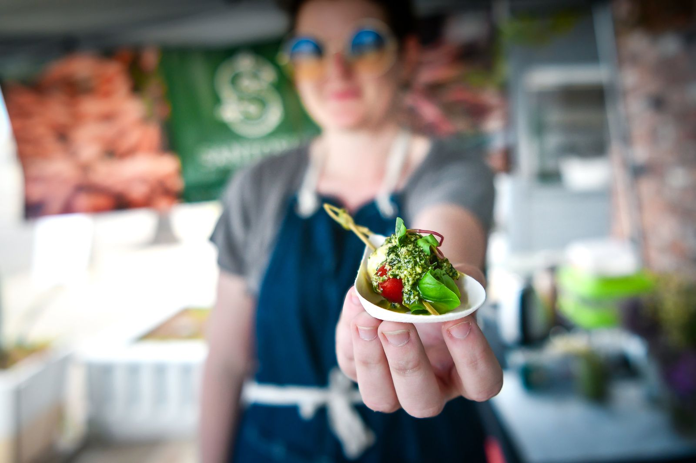
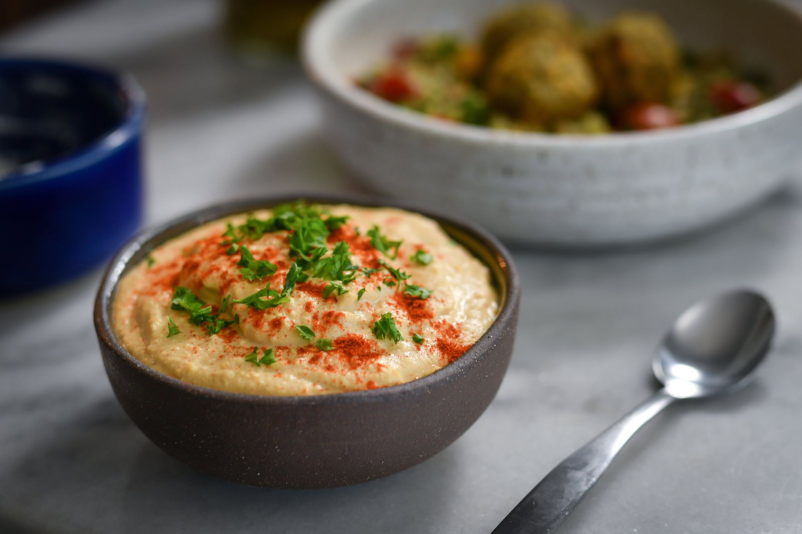
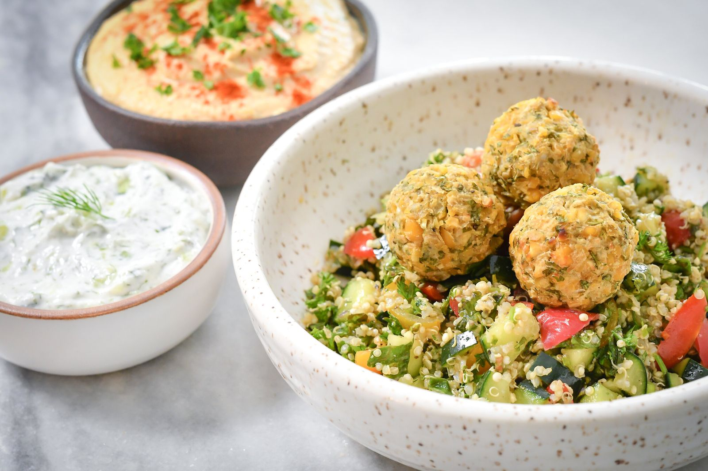
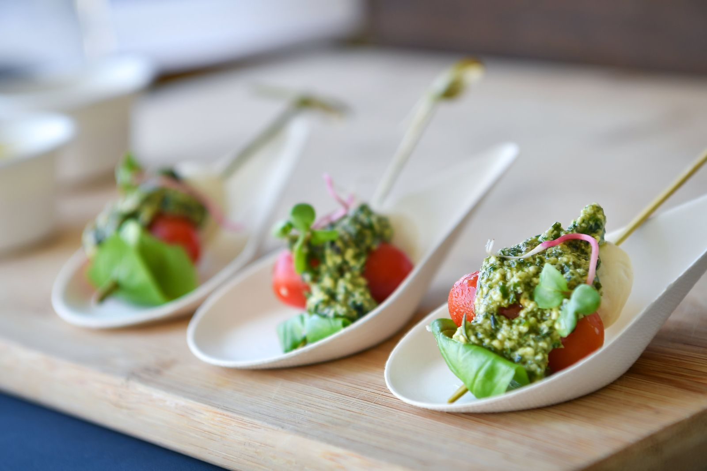
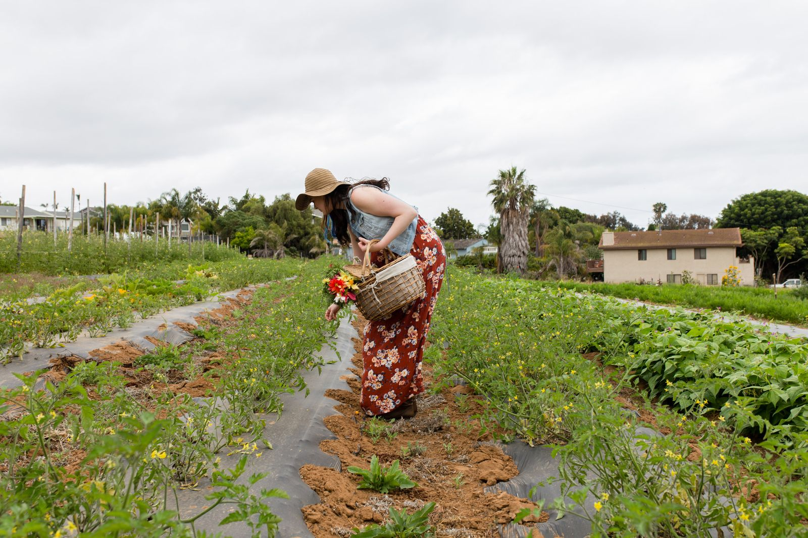
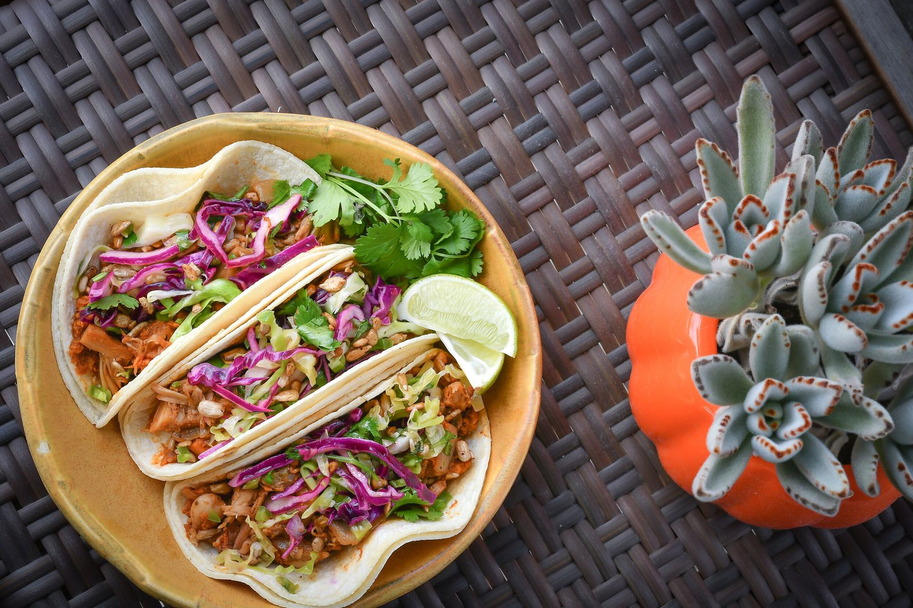

Plated
Courses served at the table, for dinners and celebrations.
Catering & events
Plated dinners, buffets and food vending for retreats, festivals and private parties. Every dish is vegan, and every menu is made to fit your event.



Service styles

Courses served at the table, for dinners and celebrations.

A generous spread your guests serve themselves, for retreats and workshops.

A Santosha food stand at your festival, market or fair.
Happy clients

Farm-to-table experiences
Curate your own experience with Liz, for your group, your family or your visitors from out of town.
Restaurant menu consulting
Looking for plant-based, gluten-free options? Liz helps restaurants, pop-ups and events create healthier, appealing vegan and allergen-free dishes.

Plan your event
Share the date, the number of guests and the kind of service you have in mind. Liz will get back to you with ideas and pricing.